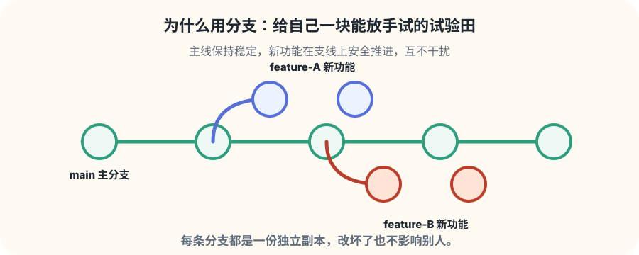
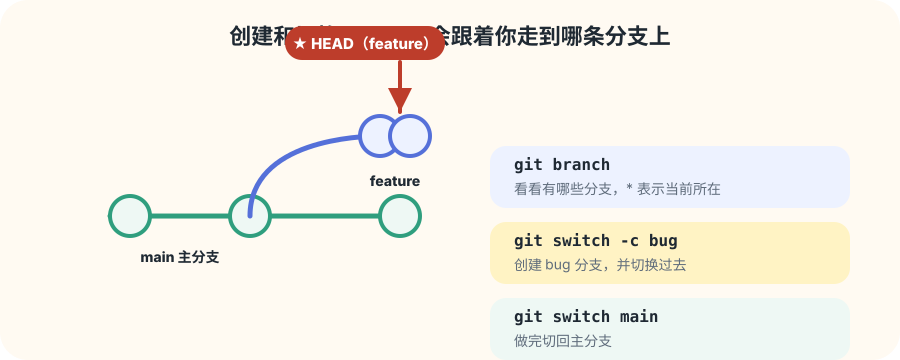
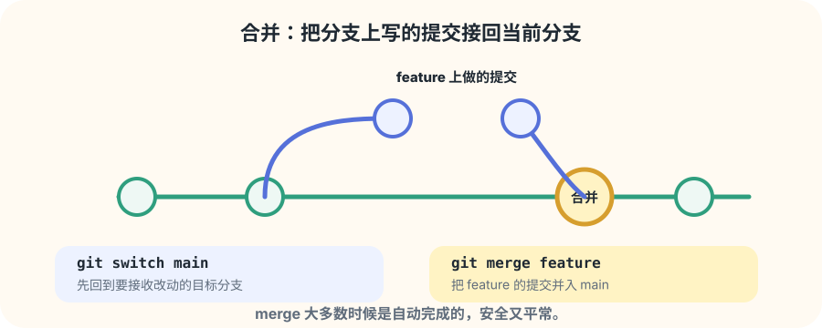
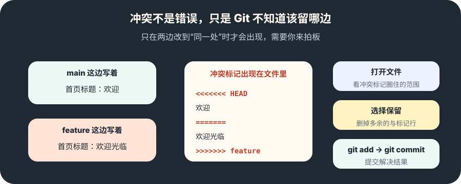
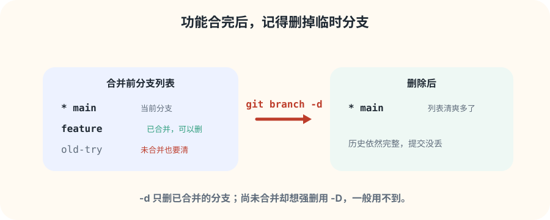

看分支：当前在哪？
git branch 列出所有分支，* 标记你正所在的分支。
新增页面
主线保持稳定，新功能在支线上放胆尝试。用多张图和小练习，学会 branch、switch、merge 和解决冲突。
先建立概念

分支的完整旅程只有四步：创建、切换、合并、删除。这一页带着你把这套“循环”走顺，之后参与协作就会轻松很多。
页面地图
git branch 列出所有分支，* 标记你正所在的分支。
git switch -c 创建并切换，改动都留在新分支里。
回到目标分支，用 git merge 把改动接回来。
合并完用 git branch -d 清理临时的功能分支。
第 1 步 · 创建与切换

git branch 帮你确认“你现在在哪个分支”。git switch -c 名字 会新建分支并立刻切过去。
创建分支那一刻，新分支会从当前所在位置起步。之后你在它上面的每一次提交，主分支都看不到，互不影响。
记住：切换之前，先把当前分支的改动提交或处理好，避免改动带错地方。
第 2 步 · 合并

合并不是“推出去”，而是“拉回来”：先 git switch main 回到要接收改动的主分支，再 git merge feature。
大多数合并都由 Git 自动完成，既安全又平常。它会把 feature 上的提交接到 main 上，历史连成一条更完整的线。
小提醒：如果两边只改了不同文件，Git 会在后台安静完成，你几乎感觉不到。
第 3 步 · 冲突

当 main 和 feature 都改了同一行或同一段，Git 不知道该留哪边，就在文件里加上 <<< >>> 标记，并提示你处理。
你只需要打开文件，保留想要的内容，删掉多余的标记行，再 git add 并 git commit 即可。
放宽心：冲突最多是“选择”，不是“灾难”。实在拿不准，去找写这段代码的同事一起看。
第 4 步 · 清理

功能合并完成后，用 git branch -d feature 删除临时分支，分支列表立刻清爽。
-d 只允许删除“已经合并”的分支，这是安全护栏。-D 才可以强删未合并的分支，但一般用不到，也不建议乱用。
注意：只要提交还在，删除分支不会丢历史。
动手练习
git-demo 仓库里运行 git branch，确认当前只有 main，且带 *。git switch -c feature，新建并切换过去。git add → git commit -m "feat: add banner"）。git switch main，发现 main 里看不到刚才的提交。git merge feature，观察改动被接回来。git branch -d feature，把临时分支清理掉。